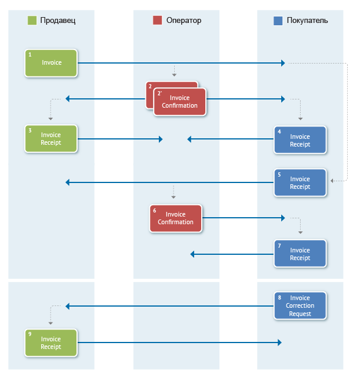
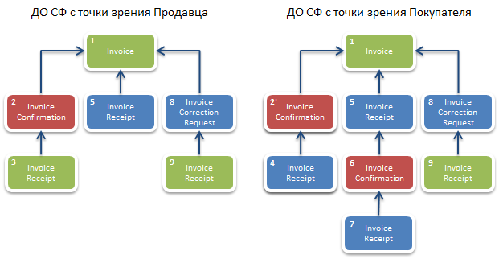

Документооборот электронных счетов-фактур¶
Обмен электронными счетами-фактурами в России регулируется Министерством финансов РФ и Федеральной налоговой службой. Порядок документооборота, связанного с выставлением и получением счетов-фактур в электронном виде с ЭЦП, утвержден приказом Минфина от 25 апреля 2011 г. N50н.
Формат электронных счетов-фактур утвержден приказом ФНС России от 05.03.2012 №ММВ-7-6/138.Форматы служебных документов, используемых при выставлении и получении счетов-фактур в электронном виде, утверждены приказом ФНС России от 30.01.2012 №ММВ-7-6/36. XML-форматы электронных документов, возникающих в ходе реализации порядка обмена ЭСФ, описываются следующими XML-схемами:
- XML-схема счета-фактуры (СФ); эта же схема описывает формат исправления СФ (ИСФ);
- XML-схема корректировочного счета-фактуры (КСФ); эта же схема описывает формат исправления КСФ (ИКСФ);
- XML-схема извещения о получении документа;
- XML-схема подтверждения оператора о дате отправки СФ/ИСФ/КСФ/ИКСФ (выдается Продавцу);
- XML-схема подтверждения оператора о дате доставки СФ/ИСФ/КСФ/ИКСФ (выдается Покупателю);
- XML-схема уведомления об уточнении СФ/ИСФ/КСФ/ИКСФ (формируется Покупателем).
Порядок обмена счетами-фактурами, разработанный Минфином, не ложится на концепцию неформализованного документооборота, описанную выше. Поэтому в Диадоке для поддержки этого порядка были разработаны специальные механизмы.
Счет-фактура и все множество служебных документов, предусмотренных порядком Минфина, помещаются в Диадоке в одно сообщение (в одну цепочку документооборота).
Добавление служебных документов к счету-фактуре по мере прохождения им различных этапов документооборота производится при помощи описанного механизма дополнений (см. описание модели данных).
Передача исправлений СФ, а также корректировочных СФ и исправлений КСФ с точки зрения API Диадока производится точно также, как и передача СФ.
Для документов, возникающих в ходе документооборота счетов-фактур, в Диадоке зарезервированы специальные типы сущностей:
- Attachment/Invoice (счет-фактура),
- Attachment/InvoiceRevision (исправление счета-фактуры),
- Attachment/InvoiceCorrection (корректировочный счет-фактура),
- Attachment/InvoiceCorrectionRevision (исправление корректировочного счета-фактуры),
- Attachment/InvoiceConfirmation (подтверждение оператора электронного документооборота),
- Attachment/InvoiceCorrectionRequest (уведомление об уточнении СФ/ИСФ/КСФ/ИКСФ),
- Attachment/InvoiceReceipt (извещение о получении СФ/ИСФ/КСФ/ИКСФ, подтверждения оператора электронного документооборота или уведомления об уточнении СФ/ИСФ/КСФ/ИКСФ).
Схема, приведенная ниже, демонстрирует порядок обмена счетами-фактурами, утвержденный Минфином и реализованный в Диадоке:
- Продавец формирует счет-фактуру Invoice (1), подписывает его и направляет Покупателю.
- Диадок формирует подтверждение оператора InvoiceConfirmation (2) о дате получения счета-фактуры, подписывает его и направляет Продавцу.
- Диадок формирует подтверждение оператора InvoiceConfirmation (2’) о дате отправки счета-фактуры, подписывает его и направляет вместе со счетом фактурой Покупателю.
- Продавец получает подтверждение оператора и отправляет в ответ подписанное извещение InvoiceReceipt (3) о получении подтверждения.
- Покупатель получает счет-фактуру и подтверждение оператора и отправляет в ответ подписанные извещение InvoiceReceipt (5) о получении счета-фактуры и извещение InvoiceReceipt (4) о получении подтверждения.
- Диадок формирует подтверждение оператора InvoiceConfirmation (6) о дате отправки извещения о получении счета-фактуры, подписывает его и направляет Покупателю.
- Покупатель получает подтверждение оператора и отправляет в ответ подписанное извещение InvoiceReceipt (7) о получении подтверждения.
- Если Покупатель обнаружил ошибки в полученном счете-фактуре, он формирует уведомление об уточнении счета-фактуры InvoiceCorrectionRequest (8), подписывает его и направляет Продавцу.
- Продавец получает уведомление об уточнении счета-фактуры, и отправляет в ответ подписанное извещение InvoiceReceipt (9) о получении уведомления.

На схеме зелеными прямоугольниками изображены документы, которые формирует Продавец, синими прямоугольниками – документы, которые формирует Покупатель, красными – документы, формируемые Диадоком, в качестве оператора электронного документооборота.
Сущности-документы, относящиеся к документообороту одного счета-фактуры, в рамках Диадок-сообщения связываются между собой при помощи атрибутов ParentEntityId.
Например, у сущности InvoiceConfirmation (2) поле ParentEntityId будет указывать на сущность Invoice (1).
Также у сущности InvoiceCorrectionRequest (8) поле ParentEntityId будет указывать на сущность Invoice (1).
Если же мы рассмотрим сущность InvoiceConfirmation (6), представляющую подтверждение оператора, отправленное в ответ на извещение о получении счета-фактуры Покупателем, то у нее поле ParentEntityId будет указывать на сущность InvoiceReceipt (5), представляющую это извещение.
Чтобы пояснить сказанное, на схемах ниже изображены структуры Диадок-сообщений в ящиках Продавца и Покупателя, представляющих один и тот же полностью завершенный документооборот (со всеми возможными служебными документами):

Стрелками обозначаются связи типа ParentEntityId между сущностями. Сущности типа Signature, представляющие ЭЦП под документами (в соответствии с порядком Минфина все документы возникающие в ходе документооборота счетов-фактур должны сопровождаться ЭЦП), на схемах не изображены.
Для облегчения процесса формирования корректного XML-файла счета-фактуры Диадок предоставляет API метод GenerateInvoiceXml.
Данный метод позволяет интегратору не погружаться в детали XML-формата СФ, а передавать в Диадок только необходимые первичные данные в виде структуры InvoiceInfo.
В частности, в структуре InvoiceInfo можно вообще не заполнять реквизиты продавца и покупалеля, достаточно указать идентификаторы их ящиков в Диадоке, и тогда соответствующие реквизиты будут автоматически загружены из справочника организаций Диадока.
Как видно из представленных выше схем, порядок Минфина помимо построения в специальном XML-формате собственно счета-фактуры требует от Продавца и Покупателя умения формировать ряд служебных документов, XML-формат которых также строго определен.
Диадок облегчает работу интеграторов в части формирования таких служебных документов, предоставляя методы API GenerateInvoiceDocumentReceiptXml и GenerateInvoiceCorrectionRequestXml, которые скрывают знание о деталях XML-форматов этих документов.
Кроме того, для удобства работы с документами (в частности, со счетами-фактурами) в Диадоке реализован метод GetDocuments, позволяющий быстро получать списки документов, удовлетворяющих различным условиям отбора.